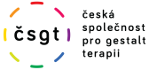
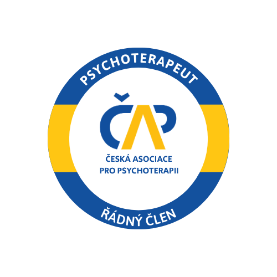
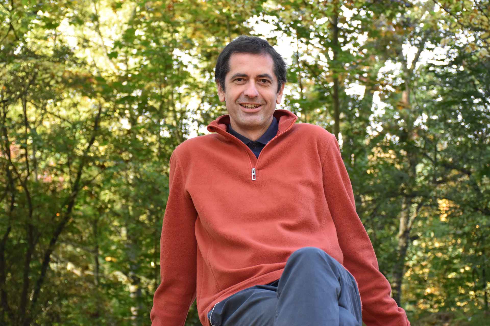
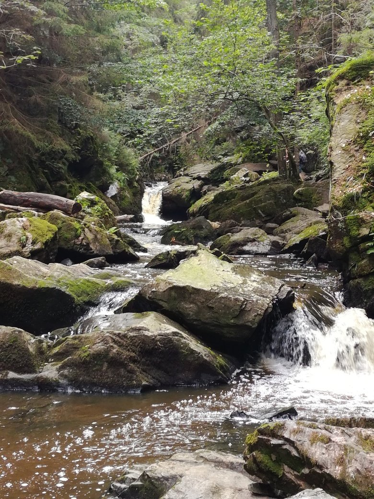
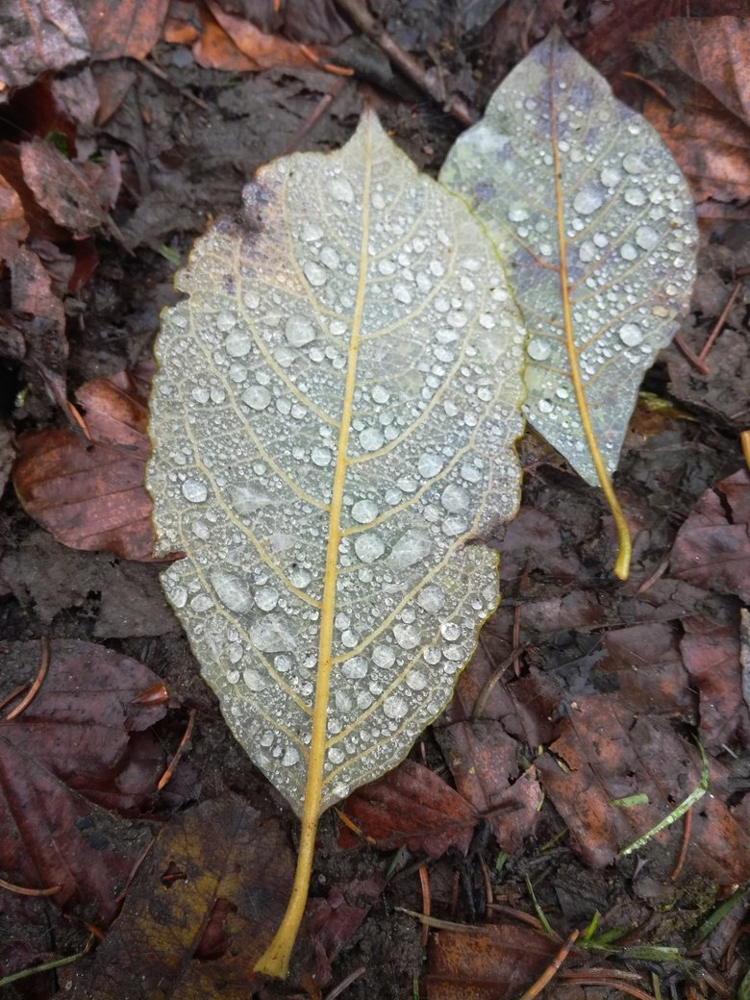
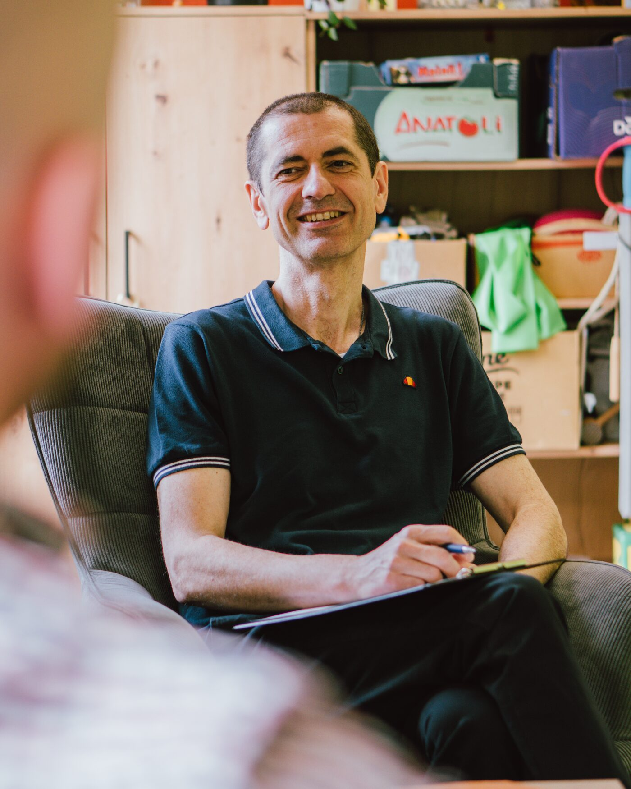
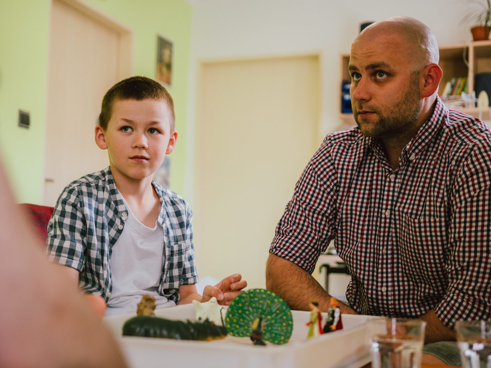
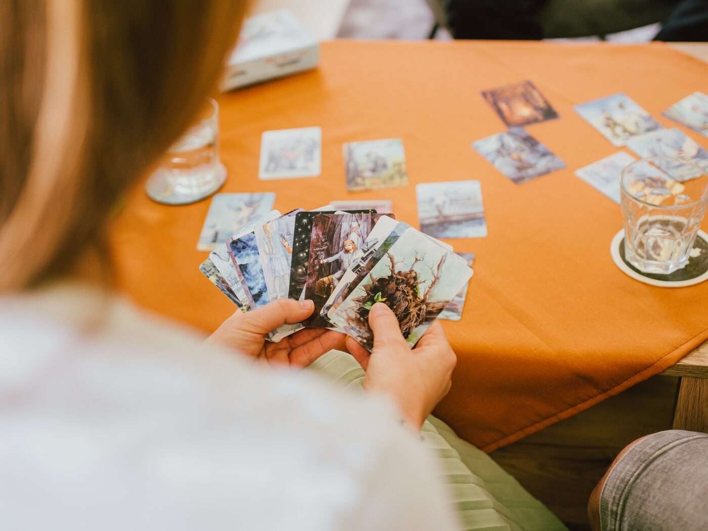
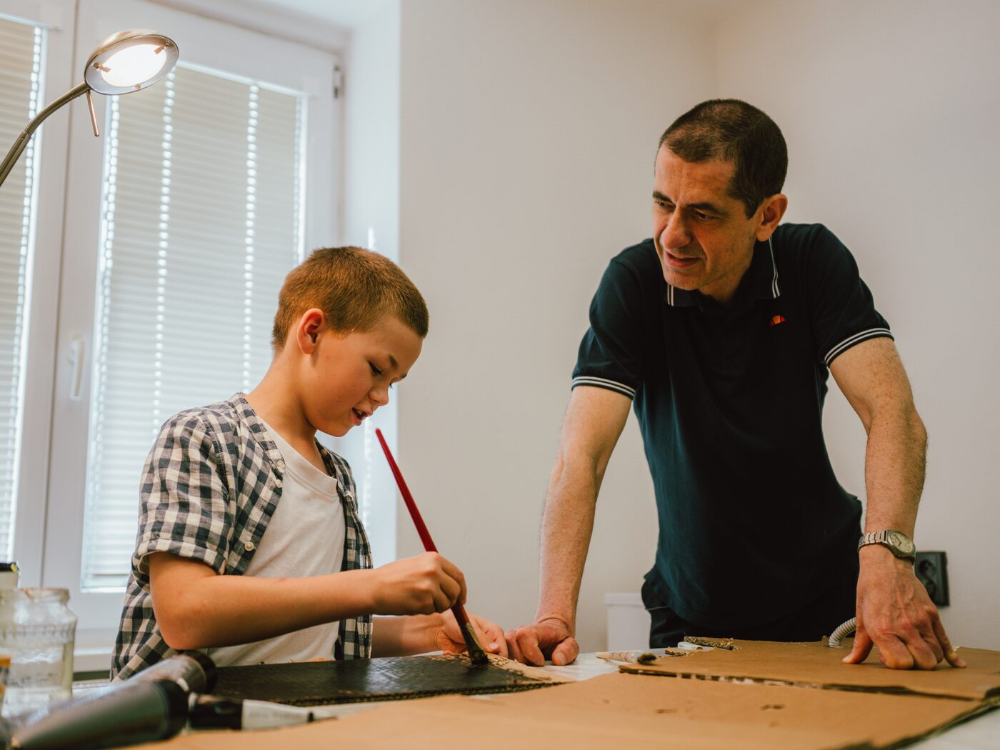
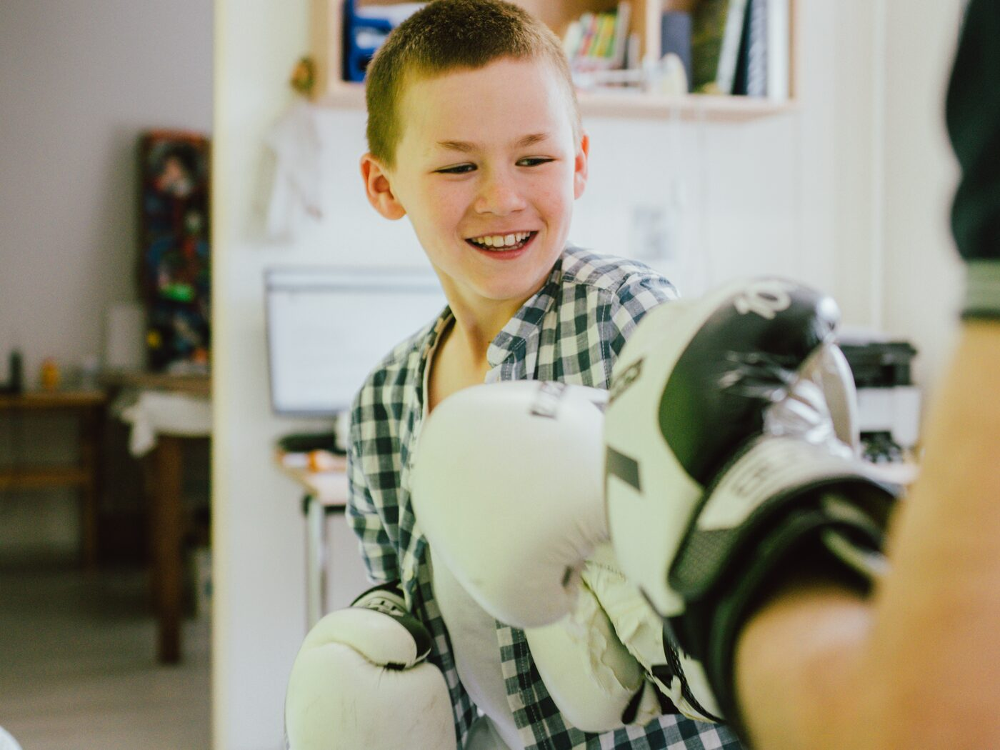

01
8 – 11 let
Děti
Potíže se začleněním do kolektivu, prožívání jinakosti, strachy a úzkosti. Pracujeme prostřednictvím hry, kresby a arteterapie — jazykem, který je dětem nejbližší.
Psychoterapeutická praxe v Plzni pro dospívající, mladé dospělé a jejich rodiny. Bezpečný prostor, v němž se dá dýchat, cítit a být sám sebou — s gestalt přístupem a prvky arteterapie.

Řádný člen České společnosti
Řádný člen České asociace
Každý život je uměleckým dílem vytvořeným všemi dostupnými prostředky.Pierre Janet



Pocházím z Moravy. Na začátku byla fyzika a difrakční optika — při studiích jsem ale postupně zjistil, že mě mnohem víc než čísla zajímají příběhy lidí kolem mě. Přihlásil jsem se k salesiánům Dona Boska, vystudoval teologii a stal se knězem.
V Pardubicích jsem v Don Bosco Centru pracoval s mládeží, která vyrůstala v ústavech a chystala se do samostatného života. V Brně jsem dva roky vedl skupiny mladých lidí a podílel se na farní práci. Od roku 1998 pracuji s lidmi profesionálně — a ta práce mě stále naplňuje.
Dnes v Plzni doprovázím dospívající, mladé dospělé a jejich rodiny v jejich náročných okamžicích. Absolvoval jsem studium arteterapie na Pedagogické fakultě Jihočeské univerzity a v roce 2023 jsem dokončil pětiletý výcvik v gestalt psychoterapii.
Specializuji se primárně na dospívající a mladé dospělé procházející náročnými životními etapami. Přicházejí ke mně i rodiče, kteří potřebují konzultaci ohledně výchovy, a dospělí až do středního věku.
Potíže se začleněním do kolektivu, prožívání jinakosti, strachy a úzkosti. Pracujeme prostřednictvím hry, kresby a arteterapie — jazykem, který je dětem nejbližší.
Bezpečný prostor pro témata kolem identity, vztahů, školy, rodiny i pocitů, které se nikam nevejdou. Pracujeme s tím, co si sami zvolíte.
Přechod do dospělosti, studium, první zaměstnání, partnerství, odchod z domova. Pomáhám najít pevnou půdu a vlastní směr.
Konzultace pro rodiče dětí a dospívajících — když tápeme ve výchově, jak komunikovat, jak neztratit kontakt, jak pomoci, když se něco láme. Delší sezení (90 minut).
Někdy bývá nejtěžší pojmenovat, s čím vlastně přicházíte. Pokud Vám něco z témat zní povědomě, klidně se ozvěte — nemusíte to mít „pojmenované".
Gestalt psychoterapie se zaměřuje na prožívání tady a teď — na to, co právě cítíte, co potřebujete a co se mezi námi v sezení odehrává. Nesnažíme se společně rychle najít „odpověď"; hledáme, co pro vás v té chvíli dává smysl.
Kromě rozhovoru často využívám i arteterapeutické nástroje. Někdy je jednodušší něco nakreslit, postavit z figurek nebo vybrat kartu, než se snažit o všem mluvit. Zapojujeme i tělo a jednoduchou relaxaci.
Vše, co se v sezení odehraje, je striktně důvěrné. Po několika sezeních si společně ověříme, jestli vám naše spolupráce dává, co potřebujete.





Dva proudy, které se v mojí praxi prolínají. Jeden staví na rozhovoru a prožívání tady a teď, druhý nabízí cestu přes obraz, tvar a tvorbu — když slova nestačí.
Humanistický, zážitkový přístup zaměřený na přítomný okamžik a osobní odpovědnost — usiluje o sjednocení těla, pocitů a rozumu.
Terapeut a klient vytváří dialogické setkání typu Já – Ty, kde terapeut podporuje sebeuvědomování a tvořivost skrze experimentální metody. Cílem je, aby si klient uvědomil své potlačené potřeby a převzal odpovědnost za svůj růst.
Psychoterapeutická metoda využívající uměleckou tvorbu — malování, kreslení, práci s hlínou — k sebevyjádření a poznání lidské psychiky.
Cílem není rozvoj uměleckých schopností — důležitý je sám tvůrčí proces jako léčebný prostředek. Není nutné umět malovat; stačí si dovolit zkusit.
Od prvního kontaktu až po pravidelná sezení. Nikam nespěcháme — tempo určujete vy.
Seznámíme se, promluvíme si o tom, co vás přivádí a co od terapie čekáte.
Pokud si odpovídáme, podepíšeme smlouvu včetně zpracování GDPR.
Nejčastěji jednou za 14 dní, každé sezení 50 minut.
Po několika sezeních se ptáme — funguje vám to, co spolu děláme?
Platba proběhne převodem v den sezení — do zprávy stačí vaše jméno a datum schůzky.
Díky členství v ČAP je možné využít finanční podpory u většiny zdravotních pojišťoven. V případě vyšší frekvence sezení nebo finanční nouze lze domluvit slevu.
Není potřeba mít všechno pojmenované ani vědět, „jak to celé je". Stačí zvednout telefon a domluvit úvodní konzultaci.
Pracovna je v prvním patře modré činžovní budovy — vchod B ze strany ulice V Bezovce. Nejpohodlnější spojení je tramvají číslo 4 na zastávku Dobrovského, odkud je to asi 5 minut pěšky.